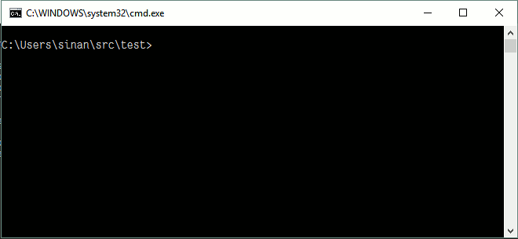

Präsentation.pptx
Präsentation Final.pptx
Präsentation Final FINAL.pptx
Eine Versionsverwaltung ist ein System, welches die Änderungen an Dateien über die Zeit hinweg protokolliert, sodass man später auf eine bestimmte Version zurückgreifen kann.
Git [ɡɪt] ist eine freie Software zur verteilten Versionsverwaltung von Dateien.
2005 durch Linus Torvalds initiiert
Dezentral
Kommandozeilenorientiert 
GitHub und Bitbucket sind netzbasierte Dienste zur Versionsverwaltung.
Browserbasiert
Rechteverwaltung
Private / Public Repositories
Projektmanagementfunktionen
Continuous Integration

Branches ermöglichen eine nicht-lineare Entwicklung.

Merges führen Branches zusammen.

Pull Requests beantragen Änderungen aus einem Branch in die Quellcode-Basis zu übernehmen.
Merge Conflicts entstehen bei sich konkurenzierenden Änderungen.